Fisheries graduate from Unpad with a strong foundation in quantitative research, experimental design, and operational metric evaluation. Experienced in transforming raw laboratory and field data into structured insights that drive strategic decision-making.
Cum Laude
Hypothesis Testing
Optimization
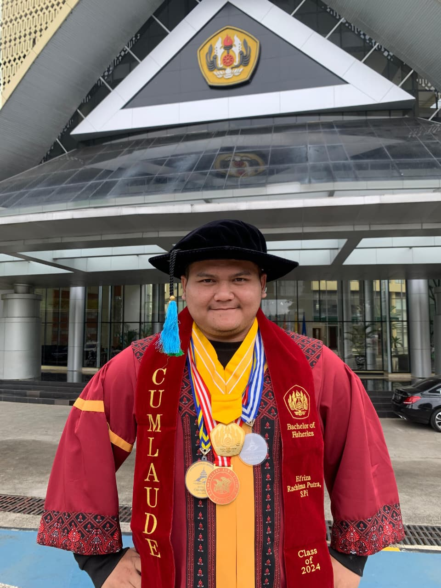
A comprehensive toolkit combining quantitative data analysis, experimental statistical testing, and business model formulation.
Microsoft Excel (Pivot Tables, Dynamic Slicers, Advanced Formulas), Python (Pandas, Matplotlib), SQL Queries (Joins, Aggregations), SigmaPlot.
Completely Randomized Design (CRD), Hypothesis Testing, ANOVA 95% Confidence Interval, Duncan Multiple Range Test, Exploratory Data Analysis (EDA).
Business Model Canvas (BMC), Financial Budgeting, Key Performance Indicators (KPI), Growth & Efficiency Tracking, Supply-Chain Mapping.
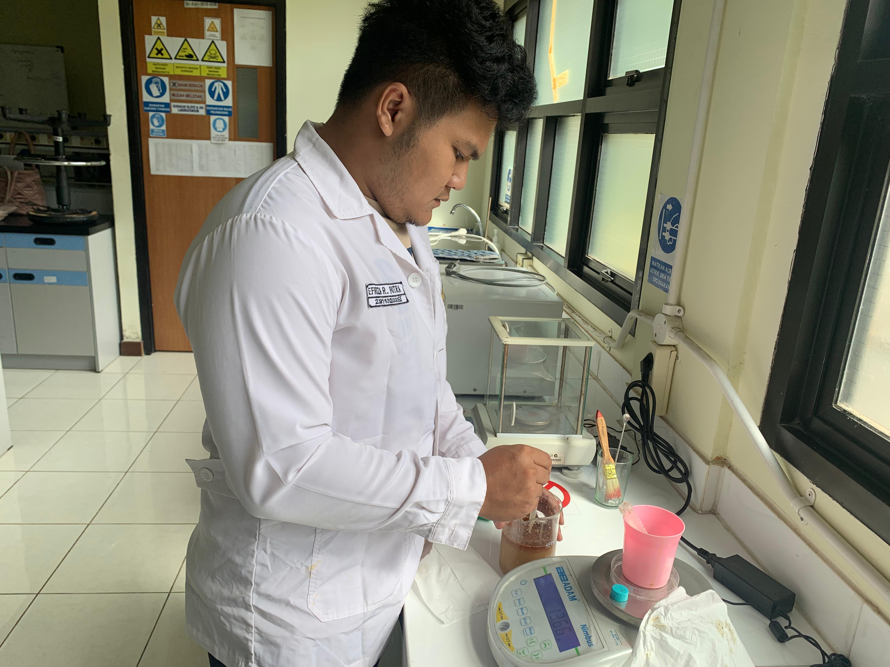
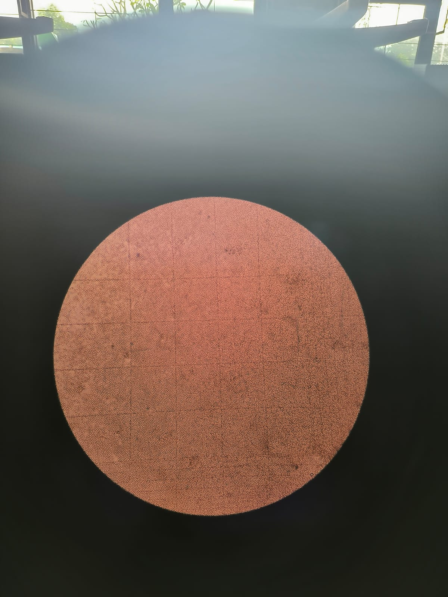
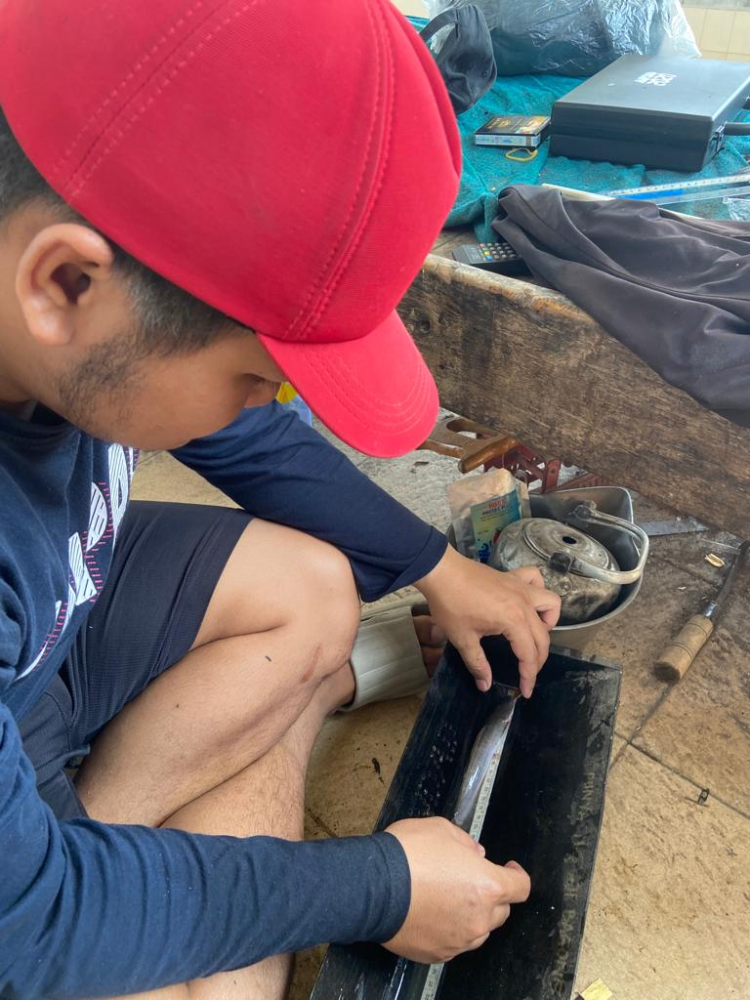
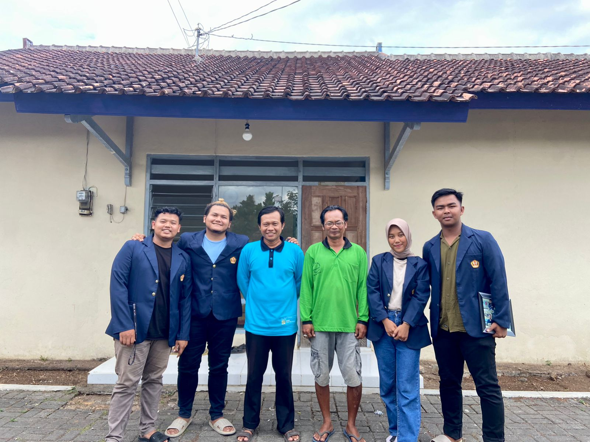
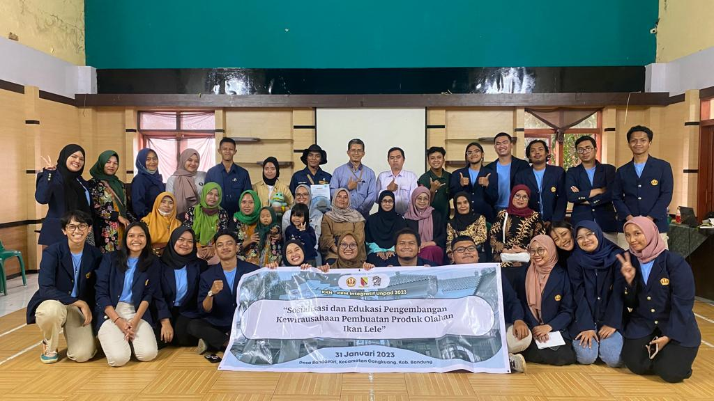
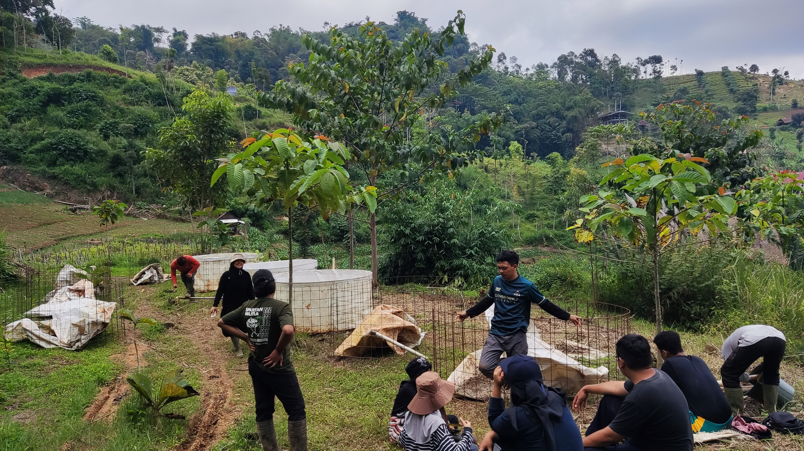
Demonstrated leadership in annual budget allocation, athletic database management, and cross-functional team coordination.
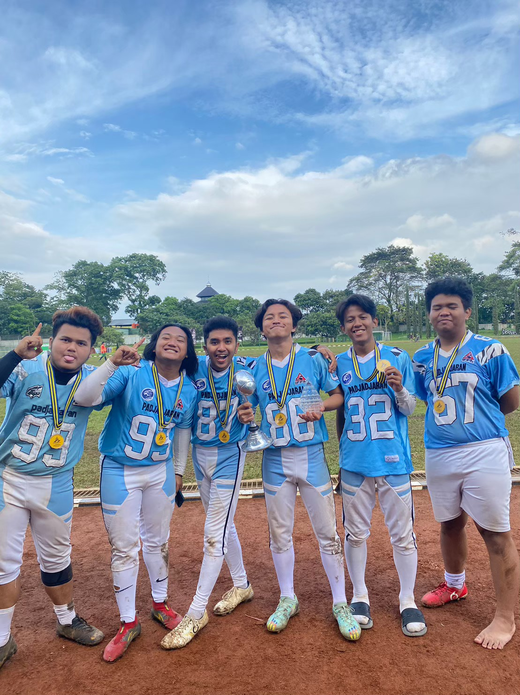
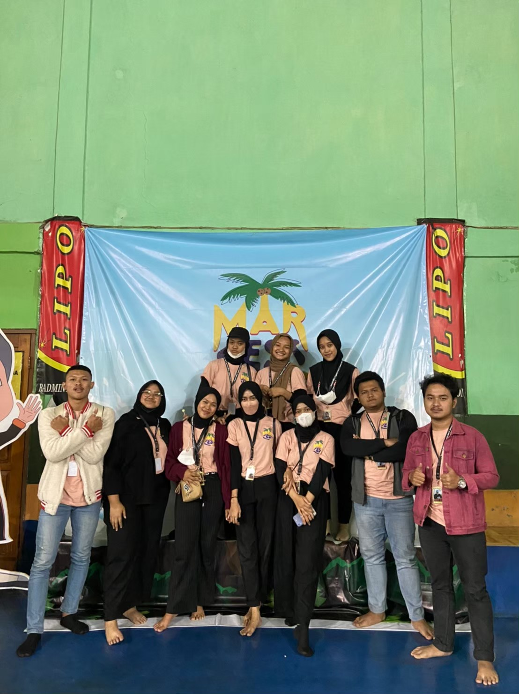
Professional credentials in data analytics, digital campaign performance tracking, and international language proficiency.
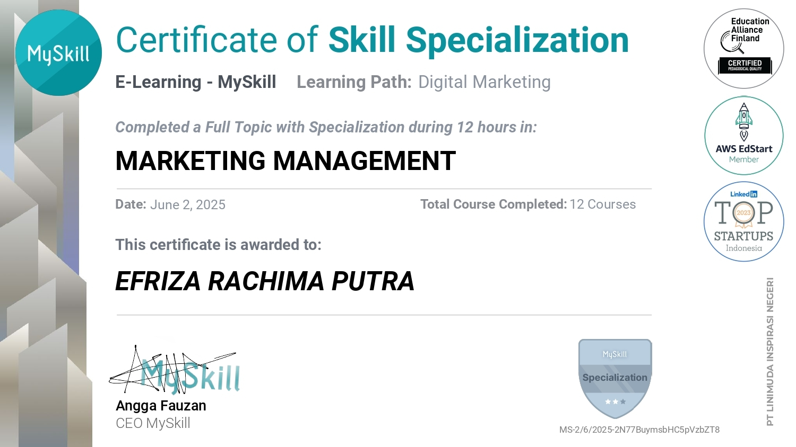
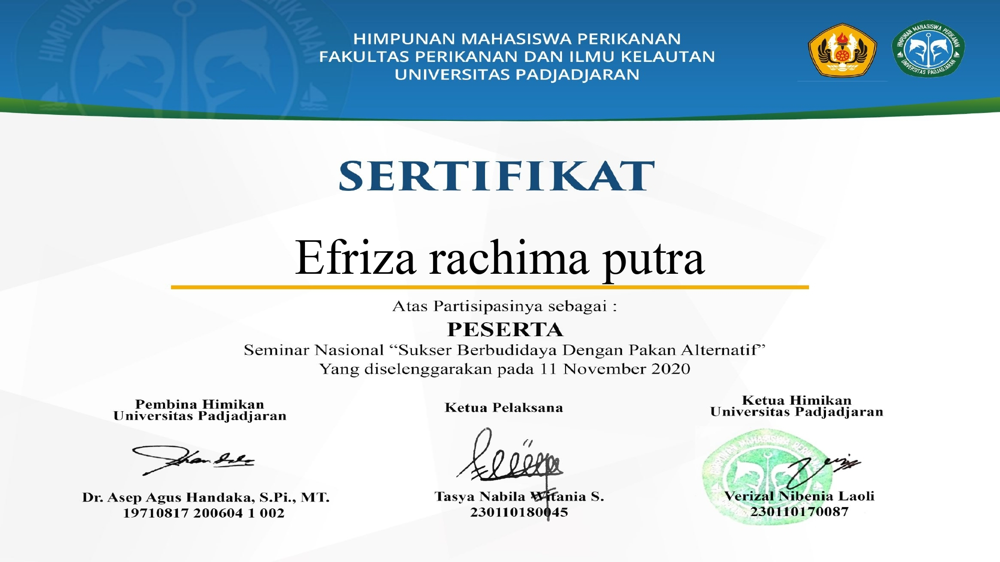
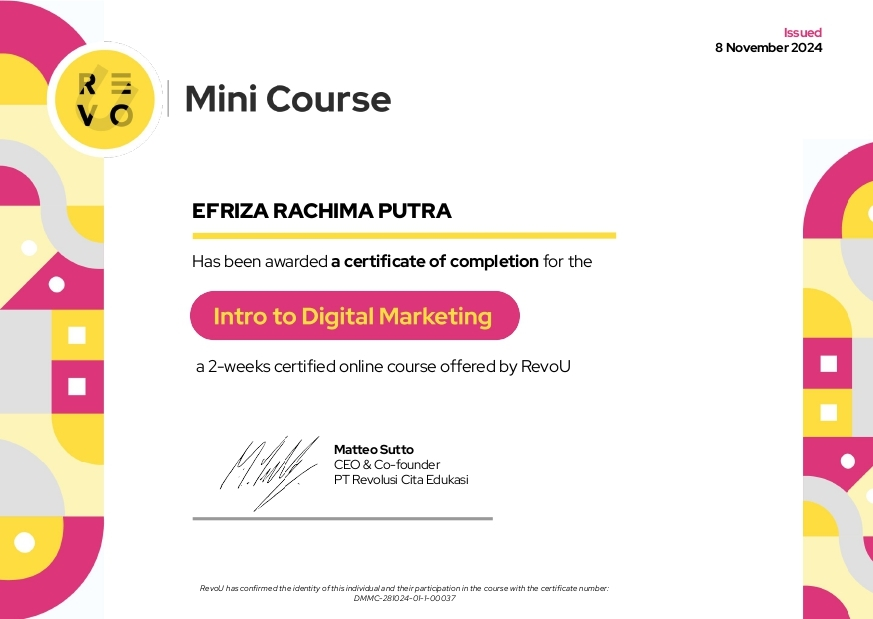
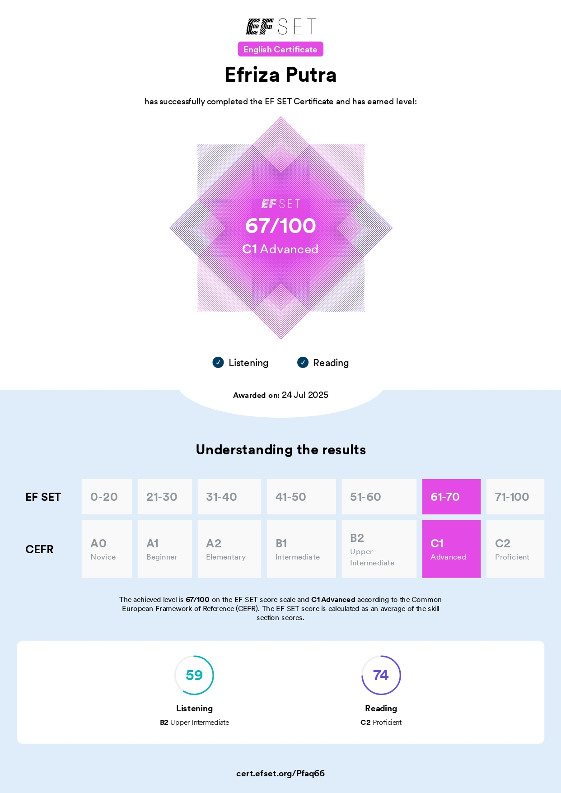
I am ready to contribute to data analytics, metric modeling, and data-driven strategy for your team.